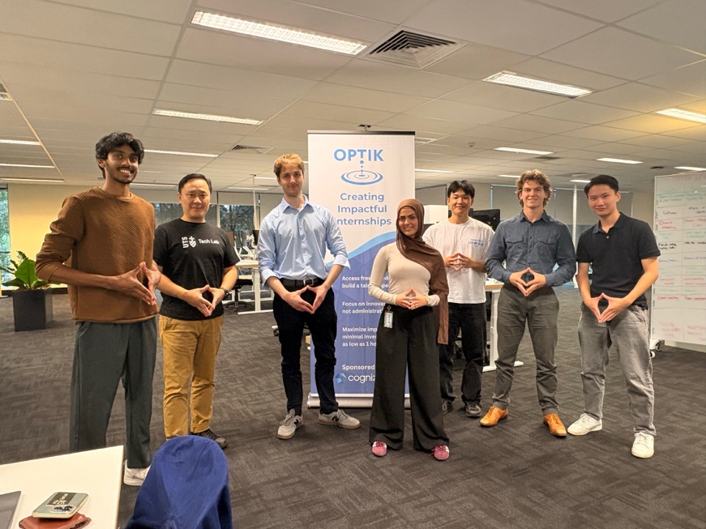
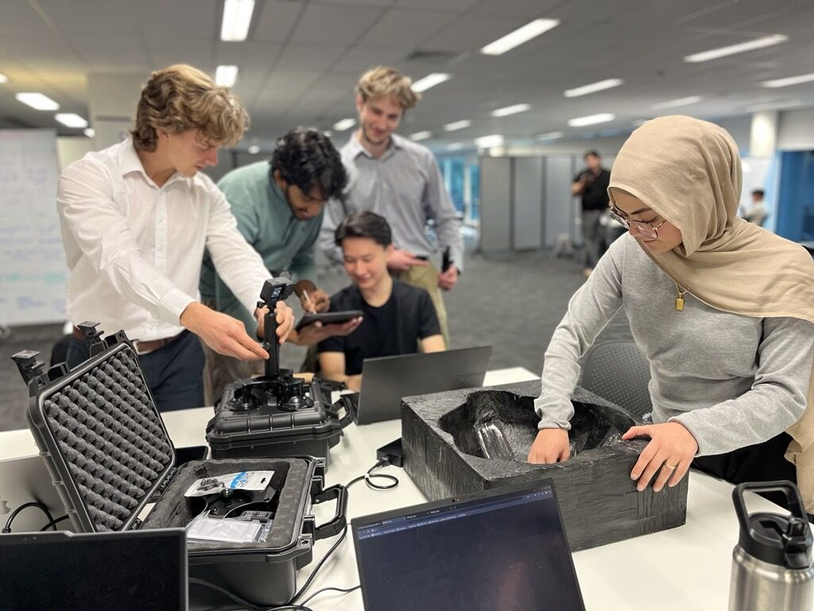

Internship Reflection
What were your expectations about your internship before you joined?
Before commencing my internship, I expected it to provide me with an opportunity to apply the technical knowledge and skills I have developed during my studies to a real-world problem. I also expected that it would afford me the opportunity to experience working in a professional engineering environment and learn how to effectively collaborate with clients, supervisors and colleagues.
What was the reality? How was it different from your expectations?
One of the biggest differences between my expectations and the reality of my internship was the emphasis placed on understanding the client's problem before developing a solution. This differed significantly from the university projects I had previously worked on, where the problem, requirements and task specifications were well defined from the beginning. Rather than being provided with a clearly outlined task and design specifications, our team spent a significant amount of time communicating with the client, researching related technologies and determining the best way to cater to the challenges they faced.
What lessons were the most important from your internship. Why were they important?

One of the most important lessons I gained from my internship was the value of a cross-disciplinary team. My team was comprised of a diverse collection of data, software and civil engineers. Although this idea was not necessarily completely unknown to me, this experience highlighted how different perspectives can afford insights that contribute towards a more effective solution. Bringing together our collective knowledge allowed us to consider aspects that any single individual would not have been able to cater for. This collaboration allowed us to create a solution that, I believe, more effectively catered to our client's needs.
After your workplace experience, what would you say your value proposition would be to an employer? How can you demonstrate this?

One way in which this internship improved my value proposition for future employers was by strengthening my ability to communicate complex technical concepts to non-technical stakeholders. Our client did not have an extensive technical background in the particular branch of knowledge associated with our project. This meant our team was required to explain technological concepts in clear, accessible language. Rather than focusing on just how a system works, we sought to highlight the value proposition of various technologies and communicate how they might improve their existing workflows or address the various challenges we faced.
How did your internship influence the type of role in which you are interested?
This internship has increased my interest in consultancy work. I would be interested in continuing to pursue workplaces in which I can work closely with a client to apply emerging technologies to solving real world problems. I would also be interested in pursuing project management, particularly in cross-disciplinary teams. I would like to continue learning how to bring together the unique skills and insights afforded by various members in a diverse team to develop solutions that effectively address a client's needs.